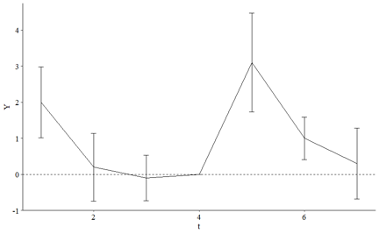

In the Event Studies chapter we estimated the effect of something that occurs at a specific time by just comparing before-event to after-event, without really using a control group. What assumption is made by no-control-group event studies that we don’t have to make with difference-in-differences?
The assumption is that the pre-treatment outcome is a valid counterfactual for the the post-treatment outcome. In other words, the “event” is the only thing that has had an effect on the outcome—i.e., no time trends.
This is not a problem in many everyday situations—e.g., the amount of light in a room before you flick the switch is a perfectly reasonable counterfactual to compare the amount of light you observe after you flick the switch. No control group needed!
In most cases, this is a very strong assumption.
It basically says the following:
\[
E[Y_{t_1} \mid Z = 0] = E[Y_{t_2} \mid Z = 0]
\]
And so the treatment effect is a simple pre-post subtraction:
\[
\begin{align}
\text{TE} &= E[Y_{t_2} \mid Z = 1] - \underbrace{E[Y_{t_2} \mid Z = 0]}_{\text{unobserved}} \\
&= E[Y_{t_2} \mid Z = 1] - \underbrace{E[Y_{t_1} \mid Z = 0]}_{\text{observed}}
\end{align}
\]
We don’t have to make this assumption with difference-in-differences because we are effectively controlling for time trends in exchange for a weaker assumption—i.e., parallel trends. However, unlike “event studies,” we actually need some untreated group(s) to construct the counterfactual.
22.2 Exercise
Which of the following potential back doors is controlled for by comparing the treated group to a control group?
The treated group may be following a trend, unique to the group, that would make the outcome change from before-treatment to after-treatment anyway
There may be events affecting everyone that would change the outcome from before-treatment to after-treatment anyway
There may be differences in typical outcome levels between the treated group and the untreated group
The decision to treat the treated group, rather than some other group, may be based on factors that are related to the outcome
Answer: B, there may be events affecting everyone that would change the outcome from before-treatment to after-treatment anyway.
22.3 Exercise
Consider a treatment and control group. Looking only at the pre-treatment period, they have exactly the same outcomes (zero gap between them in each period).
a. Despite having exactly the same outcomes pre-treatment, it happens to be the case that parallel trends is violated for these two groups. How is this possible? Explain what it means for parallel trends to be violated in this case, or give an example of how it could be violated.
The fact that pre-treatment outcomes coincide does not guarantee that the parallel trends assumption holds. It could be that the observed outcomes were just the same by coincidence, but that they were always set on different paths.
For example, think about the heights of children before and after puberty (the “treatment” can be something like growth hormones). In the absence of “treatment,” do we have reason to believe that they will grow exactly the same even if they share the same baseline?
b. If we estimate the causal effect in this case using difference-in-differences, even though parallel trends is violated, how much would our effect be off by? (note you won’t be able to give a specific number)
The answer depends on how wrong is the parallel trends assumption. We will be off by the total (potential) change minus the treatment effect.
22.4 Exercise
Consider the below graph showing the average outcome for treated and control groups in the lead up to treatment (indicated by the dashed line), and also after treatment
Based on the prior trend, does it seem likely that parallel trends holds in this instance?
No! They are clearly very different.
If we estimate difference-in-differences anyway, are we likely to overestimate the actual causal effect, underestimate it, or get it right on average?
Underestimate!
22.5 Exercise
In mid-2020, during the COVID-19 pandemic, different countries pursued different courses of action. Some locked down fully, imposing harsh penalties to most people for leaving the house outside certain proscribed times. Some were looser and only suggested staying at home, and some had hardly any restrictions at all. You notice that COVID rates tend to spike dramatically in different countries at seemingly-random times, and want to know if certain restrictions helped.
From March through May 2020, US and Canada COVID case rates followed similar trends (US rates were higher, but the trends were similar). You want to look at the effect of COVID restrictions enacted in Canada in late May 2020 on case rates. Is DID, with the US as a control group, a good way to estimate this effect? If not, what concerns would you have about this research design?
No. There are no reasons to believe that the parallel trends assumption holds for these two countries. For starters, the population size is very different and the spread of COVID seems to be influenced by population density.
Furthermore, because they are neighboring countries with a lot of traffic between them, we can imagine a lot of spill-over effects.
22.6 Exercise
Consider the below table of mean outcomes, and calculate the difference-in-difference effect of treatment. Write out the equation you used to calculate it (i.e. show how the four numbers in the table are combined to get the estimate)
Before
After
Treated
5
9
Untreated
6
7.5
It only takes 4 averages to calculate a simple diff-in-diff estimate.
In which we replace the previous table with the following parameter values:
Before
After
Treated
\(\beta_0 + \beta_1\)
\(\beta_0 + \beta_1 + \beta_2 + \beta_3\)
Untreated
\(\beta_0\)
\(\beta_0 + \beta_2\)
This makes the difference-in-difference estimator to be simply the interaction term ( \(\beta_3\) ) in the context of two time periods and two groups.
22.7 Exercise
You are planning to estimate whether voter-protection laws increase voter turnout. You note that, in 2015, a lot of new voter-protection laws were enacted in some provinces but not in others. Conveniently, no new laws were enacted in 2012, 2014, or 2016, so you decide to use 2012 and 2014 as your “before” periods and 2016 as “after”.
Which of the following best describes what you’d want to regress state-and-year level “voter turnout” measures on?
An indicator for whether the state is treated, and an indicator for whether the year is 2016.
A set of fixed effects for state, and a set of fixed effects for year.
An indicator for whether the state is treated, a set of fixed effects for year, and an indicator for whether the state is currently treated.
A set of fixed effects for state, and for year, and an interaction between “is 2016” and “is a treated state”.
This design should not be estimated using a regression.
Unless you chose the final option in the previous question, specify which coefficient in that regression would give you the DID estimate.
Answer for Part A: iv.
This is the “two-way fixed effects difference-in-difference estimator.”
Answer for Part B: The coefficient for the interaction term between “is 2016” and “is a treated state.”
22.8 Exercise
In your own words, describe what is the “two-way fixed effects difference-in-difference estimator.” What does this model assume about the effect of some treatment over time?
We use TWFE when we have measurements for various time periods and various control groups.
Here, \(\mu_i\) is a fixed effect for each group, \(\theta\) is a fixed effect for each time period, and \(\beta\) is the parameter we are interested in estimating. The variable \(\text{Treated}\) is an indicator variable that is 0 when \(i\) is the “treated group” and\(t\) is “after treatment period” (i.e., it’s an interaction term).
See Steve’s slides 90-93 (and slide 97)
TWFE assumes that the treatment effect is \(\beta\), which means that it’s homogeneous for all units in the treatment group across time (by definition). It also works best when all treated groups (if you have more than one) get treated at the same time.
See dynamic treatment effects and staggered difference-in-differences for different approaches to deal with these issues.
22.9 Exercise
Consider the below graph with estimates from a dynamic difference-in-differences model for a treatment that occurs between periods 4 and 5, with 95% confidence intervals shown.

What about this graph might make us concerned about our identification assumptions?
We should be concerned about “the effect” at\(t = 1\), which indicates that the parallel-trends assumption might not hold. Should we really be concerned about this? Or should we keep calm and carry on? The best answer is “Yes, we should be concerned.”
Ignoring any concerns we have, what would we say is the effect of treatment on Y in this case? (note the height of the line in period 5 is about 3, in period 6 is about 1, and in period 7 is about .5).
We say that the effect is 3 in the period immediately after the treatment occurs, but that this effect is short-lived (i.e., it is transitory).
sr |>ggplot(aes(date, hits, color = keyword)) +geom_line() +geom_vline(xintercept =as.Date("2020-03-15"), linetype ="dashed") +scale_x_date(date_breaks ="1 month", date_labels ="%b")
It looks like the lockdown did have an effect on the popularity of sourdough, although the effect seems to be dynamic (permanent, but certainly decreasing after some initial hype). Also, we should definitely not use soup as a control group.
Create a “Treated” indicator that’s equal to 1 for sourdough and 0 otherwise (or True/False, either way). Do a test of whether the prior trends (keeping March 15 as the “treatment date”) differ between the treated and control groups, using a linear trend and doing a statistical significance test at the 95% level. Then, if you were concerned about any of the control groups in question 3c, drop any you were concerned about (and keep them dropped for the rest of the assignment) and rerun the test.
Code
sr <- sr |>mutate(Treated =ifelse(keyword =="sourdough", 1L, 0L)) |>mutate(time =as.numeric(date) -min(as.numeric(date)))m1 <-lm( hits ~ time*Treated + keyword, data =filter(sr, date <as.Date("2020-03-15")))modelsummary(models = m1, coef_map ="time:Treated",gof_map ="none", stars =TRUE)
(1)
time:Treated
0.134***
(0.039)
+ p < 0.1, * p < 0.05, ** p < 0.01, *** p < 0.001
Code
sr_sub <- sr |>filter(keyword !="soup")m2 <-lm( hits ~ time*Treated + keyword, data =filter(sr_sub, date <as.Date("2020-03-15")))modelsummary(models =list(m1, m2), coef_map ="time:Treated",gof_map ="none",stars =TRUE)
(1)
(2)
time:Treated
0.134***
−0.023+
(0.039)
(0.012)
+ p < 0.1, * p < 0.05, ** p < 0.01, *** p < 0.001
So, by dropping soup from the dataset we have no discernible differences between groups before treatments (although this might different if you have different opinions about statistical significance). I have decided that dropping soup is good enough, but you might have decided to drop additional keywords.
Create a month variable by shifting the date variable back 15 days (so that the treatment day is the first day of the month) and then taking the month of the resulting date. Also create an After variable equal to 1/0 (or True/False) if the date is March 15 or afterwards.
Then, take a look at the values of month you get and how they line up with date, and subtract a number from month so that the last period just before treatment (Feb 16-Mar 14) is 0. (Also, change the Jan 1-14 month so it’s one less than the Jan 15-Feb 14 month)
(You can then use -lubridate::days() to subtract days from the date, and lubridate::month() to get the month from the date.)
I’m not gonna lie, that took some noodling around.
Then, use two-way fixed effects to estimate the difference-in-difference estimate of the effect of lockdown on sourdough popularity with keyword and month fixed effects, and standard errors clustered at the keyword level.
Note. You could have gone the same point-estimate (different standard error) using OLS:
Code
ols <-lm(hits ~ After +factor(month) + keyword, data = sr_sub)ols$coefficients[["After"]]
[1] 8.410135
The chapter introduces dynamic treatment effects, which where briefly discussed by Steve. One of the reasons fixest is becoming a popular package is because it makes estimating these models very easy, although it introduces a special syntax.
This is how we would estimate a difference-in-difference model allowing the effect to differ by month (using month = 0 as a reference period), with standard errors clustered at the keyword level.
---title: "Solutions 11"callout-appearance: simplecallout-icon: false---## Exercise> In the Event Studies chapter we estimated the effect of something that occurs at a specific time by just comparing before-event to after-event, without really using a control group. What assumption is made by no-control-group event studies that we don’t have to make with difference-in-differences?The assumption is that the pre-treatment outcome is a valid counterfactual for the the post-treatment outcome. In other words, the "event" is the *only* thing that has had an effect on the outcome—i.e., no time trends.This is not a problem in many everyday situations—e.g., the amount of light in a room *before* you flick the switch is a perfectly reasonable counterfactual to compare the amount of light you observe *after* you flick the switch. No control group needed!*In most cases, this is a very strong assumption*.It basically says the following:$$E[Y_{t_1} \mid Z = 0] = E[Y_{t_2} \mid Z = 0]$$<aside>$t$ means "time" and $Z$ means "treatment"</aside>And so the treatment effect is a simple pre-post subtraction:$$\begin{align}\text{TE} &= E[Y_{t_2} \mid Z = 1] - \underbrace{E[Y_{t_2} \mid Z = 0]}_{\text{unobserved}} \\&= E[Y_{t_2} \mid Z = 1] - \underbrace{E[Y_{t_1} \mid Z = 0]}_{\text{observed}}\end{align}$$We don't have to make this assumption with difference-in-differences because we are effectively controlling for time trends in exchange for a weaker assumption—i.e., **parallel trends**. However, unlike "event studies," we actually need some untreated group(s) to construct the counterfactual.## Exercise> Which of the following potential back doors is controlled for by comparing the treated group to a control group?>> a. The treated group may be following a trend, unique to the group, that would make the outcome change from before-treatment to after-treatment anyway>> b. There may be events affecting everyone that would change the outcome from before-treatment to after-treatment anyway>> c. There may be differences in typical outcome levels between the treated group and the untreated group>> d. The decision to treat the treated group, rather than some other group, may be based on factors that are related to the outcome*Answer: B, there may be events affecting everyone that would change the outcome from before-treatment to after-treatment anyway.*## Exercise> Consider a treatment and control group. Looking only at the pre-treatment period, they have exactly the same outcomes (zero gap between them in each period).>> a\. Despite having exactly the same outcomes pre-treatment, it happens to be the case that parallel trends is violated for these two groups. How is this possible? Explain what it means for parallel trends to be violated in this case, or give an example of how it could be violated.*The fact that pre-treatment outcomes coincide does not guarantee that the parallel trends assumption holds. It could be that the observed outcomes were just the same by coincidence, but that they were always set on different paths.**For example, think about the heights of children before and after puberty (the "treatment" can be something like growth hormones). In the absence of "treatment," do we have reason to believe that they will grow exactly the same even if they share the same baseline?*> b\. If we estimate the causal effect in this case using difference-in-differences, even though parallel trends is violated, how much would our effect be off by? (note you won't be able to give a specific number)*The answer depends on how wrong is the parallel trends assumption. We will be off by the total (potential) change minus the treatment effect.*## Exercise> Consider the below graph showing the average outcome for treated and control groups in the lead up to treatment (indicated by the dashed line), and also after treatment{fig-align="center" width="60%"}> a. Based on the prior trend, does it seem likely that parallel trends holds in this instance?*No! They are clearly very different.*> a. If we estimate difference-in-differences anyway, are we likely to overestimate the actual causal effect, underestimate it, or get it right on average?*Underestimate!*## Exercise> In mid-2020, during the COVID-19 pandemic, different countries pursued different courses of action. Some locked down fully, imposing harsh penalties to most people for leaving the house outside certain proscribed times. Some were looser and only suggested staying at home, and some had hardly any restrictions at all. You notice that COVID rates tend to spike dramatically in different countries at seemingly-random times, and want to know if certain restrictions helped.>> From March through May 2020, US and Canada COVID case rates followed similar trends (US rates were higher, but the trends were similar). You want to look at the effect of COVID restrictions enacted in Canada in late May 2020 on case rates. Is DID, with the US as a control group, a good way to estimate this effect? If not, what concerns would you have about this research design?No. There are no reasons to believe that the parallel trends assumption holds for these two countries. For starters, the population size is very different and the spread of COVID seems to be influenced by population density.Furthermore, because they are neighboring countries with a lot of traffic between them, we can imagine a lot of spill-over effects.## Exercise> Consider the below table of mean outcomes, and calculate the difference-in-difference effect of treatment. Write out the equation you used to calculate it (i.e. show how the four numbers in the table are combined to get the estimate)| | | ||---------------|------------|-----------|| | **Before** | **After** || **Treated** | 5 | 9 || **Untreated** | 6 | 7.5 |It only takes 4 averages to calculate a simple diff-in-diff estimate.$$\begin{align}d^{(1)} &= 9 - 5 = 4, \\\\d^{0} &= 7.5 - 6= 1.5, \\\\\text{DiD} &= 4 - 1.5 = 2.5\end{align}$$Hopefully, this should all seem very familiar to the following linear regression:$$\mathbb E[y_{it}] = \beta_0 + \beta_1 \text{treat} + \beta_2 \text{post} + \beta_3 \text{treat} \times \text{post} $$In which we replace the previous table with the following parameter values:| | | ||------------------|-------------------|-----------------------------------|| | **Before** | **After** || **Treated** | $\beta_0 + \beta_1$ | $\beta_0 + \beta_1 + \beta_2 + \beta_3$ || **Untreated** | $\beta_0$ | $\beta_0 + \beta_2$ |This makes the difference-in-difference estimator to be simply the interaction term ( $\beta_3$ ) in the context of two time periods and two groups.## Exercise> You are planning to estimate whether voter-protection laws increase voter turnout. You note that, in 2015, a lot of new voter-protection laws were enacted in some provinces but not in others. Conveniently, no new laws were enacted in 2012, 2014, or 2016, so you decide to use 2012 and 2014 as your "before" periods and 2016 as "after".>> a. Which of the following best describes what you'd want to regress state-and-year level "voter turnout" measures on?>> i. An indicator for whether the state is treated, and an indicator for whether the year is 2016.>> ii. A set of fixed effects for state, and a set of fixed effects for year.>> iii. An indicator for whether the state is treated, a set of fixed effects for year, and an indicator for whether the state is currently treated.>> iv. A set of fixed effects for state, and for year, and an interaction between "is 2016" and "is a treated state".>> v. This design should not be estimated using a regression.>> b. Unless you chose the final option in the previous question, specify which coefficient in that regression would give you the DID estimate.*Answer for Part A: iv.**This is the "two-way fixed effects difference-in-difference estimator."**Answer for Part B: The coefficient for the interaction term between "is 2016" and "is a treated state."*## Exercise> In your own words, describe what is the "two-way fixed effects difference-in-difference estimator." What does this model assume about the effect of some treatment over time?We use TWFE when we have measurements for various time periods and various control groups.$$y_{it} = \beta \times \text{Treated}_{it} + \mu_i + \theta_t + \epsilon_{it}$$Here, $\mu_i$ is a fixed effect for each group, $\theta$ is a fixed effect for each time period, and $\beta$ is the parameter we are interested in estimating. The variable $\text{Treated}$ is an indicator variable that is 0 when $i$ is the "treated group" *and* $t$ is "after treatment period" (i.e., it's an interaction term).::: callout-tipSee Steve's slides 90-93 (and slide 97):::TWFE assumes that the treatment effect is $\beta$, which means that it's homogeneous for all units in the treatment group across time (by definition). It also works best when all treated groups (if you have more than one) get treated at the same time.::: callout-tipSee *dynamic treatment effects* and *staggered difference-in-differences* for different approaches to deal with these issues.:::## Exercise> Consider the below graph with estimates from a dynamic difference-in-differences model for a treatment that occurs between periods 4 and 5, with 95% confidence intervals shown.{fig-align="center" width="80%"}> What about this graph might make us concerned about our identification assumptions?*We should be concerned about "the effect" at* $t = 1$, *which indicates that the parallel-trends assumption **might** not hold. Should we really be concerned about this? Or should we keep calm and carry on? The best answer is "Yes, we should be concerned."*> Ignoring any concerns we have, what would we say is the effect of treatment on Y in this case? (note the height of the line in period 5 is about 3, in period 6 is about 1, and in period 7 is about .5).*We say that the effect is 3 in the period immediately after the treatment occurs, but that this effect is short-lived (i.e., it is transitory).*## Exercise**Load Data**```{r}#| message: falselibrary(tidyverse)theme_set(theme_light(base_family ="Optima"))library(modelsummary)library(fixest)url <-"https://raw.githubusercontent.com/NickCH-K/TheEffectAssignments/main/sourdough_trends.csv"sr <-read_csv(url) |>select(date, keyword, hits) |>mutate(date =as.Date(date),keyword =factor(keyword) )glimpse(sr)```**Line Graph**```{r}sr |>ggplot(aes(date, hits, color = keyword)) +geom_line() +geom_vline(xintercept =as.Date("2020-03-15"), linetype ="dashed") +scale_x_date(date_breaks ="1 month", date_labels ="%b")```*It looks like the lockdown did have an effect on the popularity of sourdough, although the effect seems to be dynamic (permanent, but certainly decreasing after some initial hype). Also, we should definitely not use `soup` as a control group.*> Create a "Treated" indicator that's equal to 1 for sourdough and 0 otherwise (or True/False, either way). Do a test of whether the prior trends (keeping March 15 as the "treatment date") differ between the treated and control groups, using a linear trend and doing a statistical significance test at the 95% level. Then, if you were concerned about any of the control groups in question 3c, drop any you were concerned about (and keep them dropped for the rest of the assignment) and rerun the test.```{r}sr <- sr |>mutate(Treated =ifelse(keyword =="sourdough", 1L, 0L)) |>mutate(time =as.numeric(date) -min(as.numeric(date)))m1 <-lm( hits ~ time*Treated + keyword, data =filter(sr, date <as.Date("2020-03-15")))modelsummary(models = m1, coef_map ="time:Treated",gof_map ="none", stars =TRUE)sr_sub <- sr |>filter(keyword !="soup")m2 <-lm( hits ~ time*Treated + keyword, data =filter(sr_sub, date <as.Date("2020-03-15")))modelsummary(models =list(m1, m2), coef_map ="time:Treated",gof_map ="none",stars =TRUE)```So, by dropping soup from the dataset we have no discernible differences between groups before treatments (although this might different if you have different opinions about statistical significance). *I have decided that dropping soup is good enough, but you might have decided to drop additional keywords.*> Create a `month` variable by shifting the `date` variable back 15 days (so that the treatment day is the first day of the month) and then taking the month of the resulting date. Also create an `After` variable equal to 1/0 (or True/False) if the date is March 15 or afterwards.>> Then, take a look at the values of `month` you get and how they line up with `date`, and subtract a number from `month` so that the last period just before treatment (Feb 16-Mar 14) is 0. (Also, change the Jan 1-14 month so it's one less than the Jan 15-Feb 14 month)>> (You can then use `-lubridate::days()` to subtract days from the date, and `lubridate::month()` to get the month from the date.)```{r}sr_sub <- sr_sub |>mutate(month =month(date -days(14)) -2,After =if_else(condition = date >=as.Date("2020-03-15") & Treated ==1L, true =1L, false =0L ) ) |>mutate(month =if_else(date <=as.Date("2020-01-14"), -2, month)) ```*I'm not gonna lie, that took some noodling around.*> Then, use two-way fixed effects to estimate the difference-in-difference estimate of the effect of lockdown on sourdough popularity with `keyword` and `month` fixed effects, and standard errors clustered at the `keyword` level.```{r}twfe <-feols( hits ~ After | keyword + month,cluster ="keyword",data = sr_sub)modelsummary(twfe, gof_map ="none")```*Note. You could have gone the same point-estimate (different standard error) using OLS:*```{r}ols <-lm(hits ~ After +factor(month) + keyword, data = sr_sub)ols$coefficients[["After"]]```> The chapter introduces *dynamic treatment effects,* which where briefly discussed by Steve. One of the reasons `fixest` is becoming a popular package is because it makes estimating these models very easy, although it introduces a special syntax.This is how we would estimate a difference-in-difference model allowing the effect to differ by month (using `month = 0` as a reference period), with standard errors clustered at the keyword level.```{r}dynamic <-feols( hits ~i(month, Treated, ref =0) | keyword + month,cluster ="keyword",data = sr_sub)modelsummary(dynamic)coefplot(dynamic)```